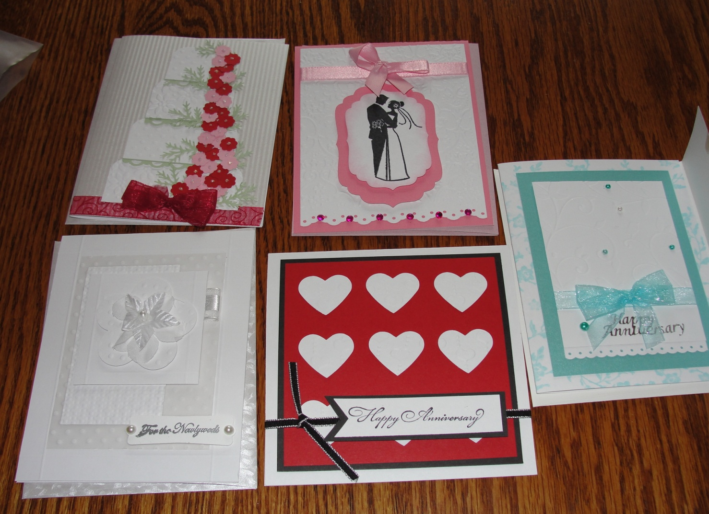

Project
Running head: CARD CLASS
Gender Fieldwork Project
Robert D. Majewski
Lakeland College
GENDERFIELDWORK PROJECT
My Card Class Experience
Doing something outside my gender was not an easy assignment for me. As I pondered the assignment, I tried to come up with ideas on an activity that I might have some fun with and not be too uncomfortable. Simon Baron-Cohen stated, “We hold different beliefs about our genders that affect our behavior and interests” (Baron-Cohen, 2003). There are just some things that guys should not be doing. As I thought about that, a list of all of the things that my wife has an interest in was starting to form in my mind. After discussing potential activities with my wife, we decided to look into attending a stamping or card class.
I had never attended a card class and I was not sure what it entailed. My wife (Cindi) and her close friends attend these activities often. I inquired if she had ever seen a male attend one of these activities. I know I did not know any male who ever had. She said she had not seen any males in a class. I began to look at this as a potential project. However, I started thinking about the questions I had. What happens at these things? How long do they last? What do you end up doing? Do I need to bring anything? Does it cost anything? Will I leave with my manhood intact? All of these questions went through my mind. There was one big question that I left out and it was perhaps the most important. Will I be seen and recognized by someone I know?
I had my wife sign us up for the class. I did not want to surprise anyone too soon. I decided it would be fun to take my wife along to help take notes and to hear what the others in the class had to say when I stepped out to visit the men’s room. She signed us up as Cindi and friend. I put July 12, 2011, in my electronic datebook. Card class would commence that Tuesday at 6 PM. I would be going armed with my double-sided tape, $10.00, and a pair of scissors. Now I was getting a little nervous. Barnett and Rivers mentioned that peer pressure would determine what is off limits for males. They also mentioned that stereotypes could be very powerful and cause anxiety (Barnett & Rivers, 2004). I was beginning to feel the pressure. I hoped I would not run into anyone I know. We would be making wedding cards and anniversary cards.
Tuesday eventually came and it was time to go to class. I was a little apprehensive about doing this as I walked from the car to the building. We went to the Hobby Lobby and the first thing I had to do was ask the woman at the cash register where the card class was being held. She sort of did a double take and then pointed to a door located on the far wall. Here we go. I walked into the room before my wife and asked if this was the room where the card class was being held. The look I got from the leader (Barb) was priceless. She said, “Oh, I was not expecting a man. Welcome.” She showed me where we could sit and then my wife and I got started. Barb then exclaimed, “I have been trying to get my husband to make cards for 15 years. Now I can go home to my husband and say; Jack, real men do stamp!” Barb was very excited to show me how all of her little toys worked and share all of her tricks. Later as the evening went on she asked, “How are you doing girls or and guy. Sorry Bob, you’re the first guy I have had in my class.”
There were a couple of other things worth mentioning. There was a point later in the evening when Barb asked my wife why she put down Cindi and friend when she signed up. Before my wife could answer, Barb inquired if it was because she was bringing a male to the class and she was not sure if Barb would be fine with that. My wife just said that was not the reason. The other was the trip I took to the bathroom to see if any of the women would make a comment to my wife while I was out of the room. To my surprise, nothing was mentioned while I was out of the room. I think this was due to the exceptional way that Barb handled it. As a result, I did not feel any gender bias in the class. Barb did tell us that she had heard of men attending card classes. It just had not happened to her. She heard that men make very nice cards. Another point worth mentioning, there was very little conversation amongst the other women attending the class. They seemed to be very focused on designing their cards. I expected it to be more of a social function. The instructions took a little bit of deciphering to figure out how the cards need to be constructed. This played right into my systemizing skills. The Cuttle-bug also got my interest. Learning how to use this gadget was one of the evening’s treasures.
In the article, “Doing Gender”, West and Zimmerman point out that we are seen as male or female by the activities we are doing in society. We do gender. It is how we behave and not just our biological differences. To be considered male or female we need to act a certain way. Society determines what is normal (West & Zimmerman, 1978). So society will interpret our activities and label us as male or female. Certain activities in society are seen as things that either males or females do. The pressure that society can put on each gender to act a certain way can be enormous.
One thing I learned doing this project is that if I buy a Cuttle-bug, I need to use a 40% off coupon. After the class was over, I did not have the heart to tell Barb that I did this for a class project. She was truly excited to have a guy in her class. I think she would have been disappointed to know my real reasons for doing it. Her husband Jack was going to get an earful when she got home. Participating in that conversation would have been fun. I did make it out of the class without being recognized. After making five cards and having a fun time doing it, if I was recognized it would have been fine. My wife and I really enjoyed the evening. Would I do it again? What would I do with all of the duplicate wedding and
Figure . Five cards made during class
Anniversary cards? I think I will leave it to my wife and her friends. I would just get in the way.
References
Barnett, R. & Rivers, C. (2004). Same difference. New York: Basic Books
Baron-Cohen, S. (2003). The essential difference. New York: Basic Books
West, C. & Zimmerman, D. H. (1987). Doing gender [Electronic version]. Gender and Society, 1(2), 125-151.
Author Note
My wife enjoys card making and stamping with her friends. I cannot quite see myself doing that with my friends but I had a fun time. Barb was very gracious and a wonderful teacher. She made it a fun experience.